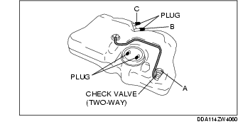

1. Follow "BEFORE SERVICE PRECAUTION" before performing any work operations to prevent fuel from spilling from the fuel system. (See BEFORE SERVICE PRECAUTION [ZY].)
2. Disconnect the negative battery cable.
3. Remove the fuel tank assembly. (See FUEL TANK REMOVAL/INSTALLATION [ZY].)
4. Remove the charcoal canister. (See CHARCOAL CANISTER REMOVAL/INSTALLATION [ZY].)
5. Perform the following procedure to verify the fuel tank airtightness.

6. Plug the fuel pump unit pipe and port C.
7. Level the fuel tank.
8. Apply a pressure of 5.9 kPa {44 mmHg, 1.7 inHg} to port A and wait for a while.
9. With the pressure still applied, verify that there is airflow from port B and the pressure is 0- 5.9 kPa {0-44 mmHg, 0- 1.7 inHg}.
10. Apply a pressure of -2.0 kPa {-15 mmHg, -0.6 inHg} to port A and wait for a while.
11. With the pressure still applied, verify that there is airflow from port C and the pressure is -2.0- 0 kPa {-15- 0 mmHg, -0.6- 0 inHg}.
12. Apply a pressure of 5.9 kPa {44 mmHg, 1.7 inHg} to port A and wait for a while.
13. With the pressure still applied, verify that there is no airflow from port B.